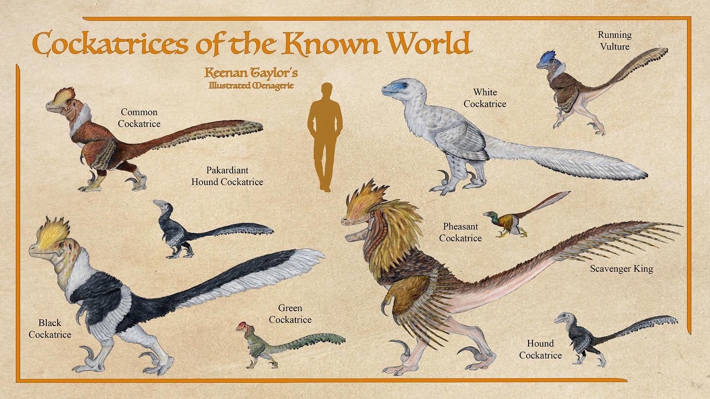
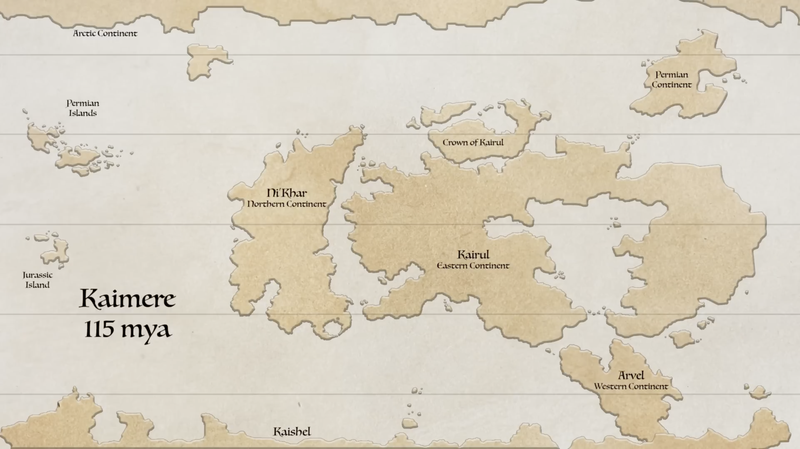
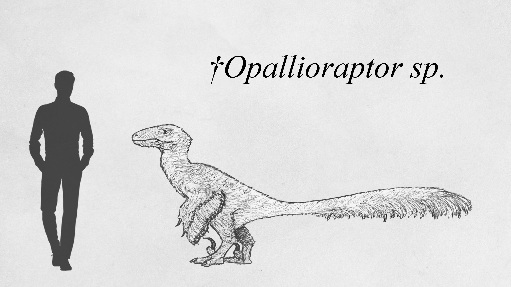
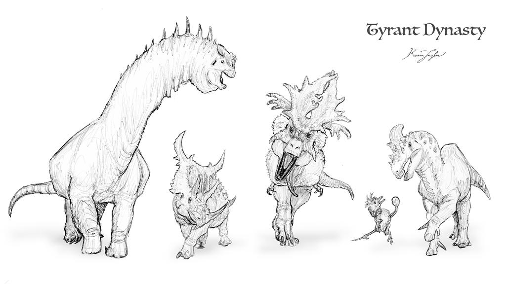
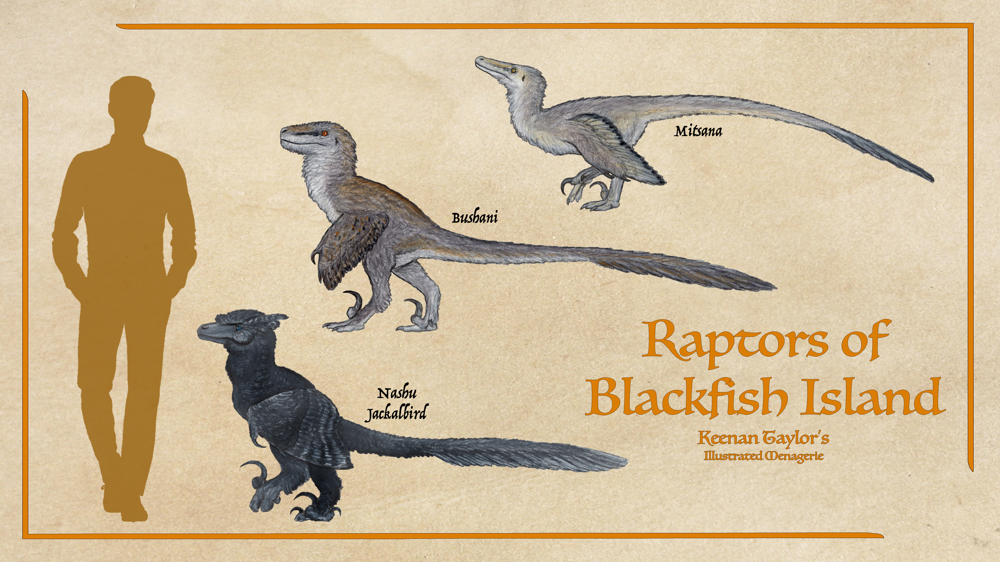

Scientific Classification
| Kingdom | Animalia | Animalia | Animalia |
|---|---|---|---|
| Phylum | Chordata | Animalia | Animalia |
| Clade | Archosauria | Animalia | Animalia |
| Clade | Avemetatarsalia | Animalia | Animalia |
| Clade | Dinosauria | Animalia | Animalia |
| Clade | Saurischia | Animalia | Animalia |
| Clade | Theropoda | Animalia | Animalia |
| Clade | Coelurosauria | Animalia | Animalia |
| Clade | Maniraptora | Animalia | Animalia |
| Clade | Paraves | Animalia | Animalia |
| Family | Dromaeosauridae | Animalia | Animalia |
Taxonomic note: Dromaeosaurids belong to Coelurosauria, a diverse group of theropod dinosaurs that also includes tyrannosaurs, ornithomimosaurs, and birds. Their characteristic anatomy distinguishes them from other feathered theropods, particularly in the arrangement of their forelimbs and hindfeet. However, these characteristics have been modified considerably in Kaimere. The common term cockatrice is therefore not equivalent to Dromaeosauridae, nor does it necessarily correspond to a single evolutionary lineage.
01 · INTRODUCTION
Overview

Dromaeosaurids are a family of feathered coelurosaurian theropod dinosaurs distinguished by a suite of highly derived anatomical characteristics. Among their most recognizable adaptations are modifications of the forelimbs that allow them to seize and restrain prey, alongside the elongated, sickle-like talon of the second toe, a characteristic feature of the majority of paravians to which they belong. On Earth, dromaeosaurids were among the most successful small and medium-sized predatory dinosaurs of the Cretaceous, occupying ecological roles as ambush hunters, pursuit predators, and opportunistic carnivores. Like all other non-avian dinosaurs, however, they were casualties of the Cretaceous-Paleogene extinction event.
Their extinction on Earth proved temporary in the broader history of Kaimere. Through the Harvests, dromaeosaurs were successfully introduced into the Known World and other continents, where they underwent approximately seventy million years of additional evolution. The resulting fauna is markedly different from that of the Mesozoic, with dromaeosaurs occupying a diversity of ecological roles that extends well beyond those of their terrestrial ancestors.
To the inhabitants of Kaimere, the common term for dromaeosaurs is cockatrice. Although the name encompasses a diverse assemblage of animals, its most familiar image is that of the true cockatrices, particularly members of the genus Infernogallus. These are large, feathered predators with bald heads, conspicuous facial integument, and elaborate crests of vibrant coloration. Their appearance has become so closely associated with the term that an average Kaimeran asked to describe a cockatrice would likely envision one of these animals rather than the smaller and more primitive representatives of the wider dromaeosaur radiation.
Cockatrices are among the most dominant predators throughout the Known World. Their success is not attributable solely to their formidable claws, teeth, or physical abilities, but to an extraordinary combination of endurance, rapid reproduction, adaptability, and social flexibility. In many environments, they have become so abundant that they overwhelm mammalian predators despite the latter's often greater strength. Even the large megaraptorans, which occupy the apex of many Kaimerean ecosystems, must contend with cockatrices as persistent competitors and scavengers.
The dromaeosaurs of Kaimere are not, however, a single uniform group. Their evolutionary history has produced several distinct lineages, ranging from small ambush predators to highly specialized pursuit hunters and enormous macropredators. Some retain much of the ancestral morphology associated with Mesozoic eudromaeosaurs, while others have undergone profound changes in their locomotor anatomy, social organization, and feeding adaptations.
The distinction between the true cockatrices and other dromaeosaurs is particularly important. Two eudromaeosaurs of the Known World are conventionally included among cockatrices despite not belonging to the true cockatrice clade. These animals retain the ancestral ankle condition and appear to employ a prey-restraining method comparable to that believed to have been used by Mesozoic eudromaeosaurs. Although they remain successful in their respective environments, they have generally been outcompeted by the more derived cockatrices.
Outside the Known World, dromaeosaurs have diversified into equally distinctive forms. Kairul is home to the social fishcocks, whose elaborate male crests and ritualized combat have made them culturally significant among the peoples of Ha Sha'eiln. The cold continent of Kaishel supports the foxcocks, a widespread genus adapted to its temperate and polar environments, as well as the enormous adzakoordu. Meanwhile, the forests and titan gardens of western Kairul are home to the colossal Titan Slayer, a specialized predator that demonstrates just how far the dromaeosaur lineage has diverged from its ancestral body plan.
Despite these differences, dromaeosaurs remain united by their evolutionary heritage as feathered theropods, their distinctive forelimb anatomy, and the characteristic predatory adaptations that have allowed them to persist through successive ecological upheavals.
02 · DEEP TIME
Evolutionary History
Origins and the Mesozoic Inheritance

The origins of Kaimere's dromaeosaurs remain uncertain. Many of the Cretaceous fauna associated with the earliest stages of the Second Mesozoic Dynasty appear to have Gondwanan origins, leading some naturalists to suggest that the original dromaeosaurs were unenlagiines. This interpretation would be consistent with the broader biogeographic composition of the fauna introduced during the period.
However, several animals exhibit a striking resemblance to Deinonychus, raising questions about their ancestry. It remains possible that these dromaeosaurs independently evolved similar anatomical characteristics in response to comparable predatory demands. Alternatively, relatives of Deinonychus may have existed in Gondwana but have yet to be discovered. The proximity of southern North America and northern Gondwana during the Cretaceous makes such a relationship conceivable, while the possibility that contemporary Laurasian harvests were more influential than presently recognized cannot be excluded.

The genus Opallioraptor is among the most celebrated representatives of this early fauna. Its name derives from the opalization of much of its nearly complete holotype skeleton, which is now regarded as a prized possession of the Great Library. The specimen provides an unusually valuable glimpse into the anatomy of Kaimere's ancient dromaeosaurs, although the broader ancestry of the group remains unresolved.
The dromaeosaurs introduced during this period were not necessarily identical in ecology or anatomy to their modern descendants. The family had already developed its characteristic predatory framework, but subsequent evolution in Kaimere would produce animals that increasingly diverged in locomotion, social behavior, body size, and prey specialization.
Early Cockatrices and the Rise of Infernogallinae

The true cockatrices, classified within the clade Infernogallinae, evolved in Kairul. Their defining anatomical characteristic is the fusion of the metacarpals, a feature also seen in derived tyrannosaurs and ornithomimosaurs. This condition is interpreted as an adaptation associated with cursoriality, reflecting the increasingly specialized locomotor demands placed upon these predators.
The evolution of the true cockatrices represents a significant departure from the more familiar anatomical condition of Earth's dromaeosaurs. In most dromaeosaurs, the feet are strongly associated with prey restraint and manipulation. In Infernogallinae, however, the foot as a whole became increasingly adapted for speed and endurance. The enlarged second pedal claw remained a formidable weapon, but the remainder of the foot was transformed into a structure optimized for running.
This distinction is particularly important because it illustrates the unusual specialization of the cockatrice. Although their anatomy might initially suggest a predator primarily adapted to grappling with prey, their fused metatarsals and powerful hindlimbs allow them to pursue animals over considerable distances. Their endurance is among the most remarkable in the animal kingdom, with individuals recorded jogging for miles without apparent fatigue.
The cockatrice's cranial crest is another defining characteristic of the clade. Unlike the fleshy combs of galliform birds, these structures consist of bone and hardened keratin, with sinus sacs beneath them that can expand to produce striking visual displays. Crest shape, coloration, and intensity vary among lineages, but the general form often resembles the comb of a domestic fowl. These displays are important components of the group's visual communication and contribute to the distinctive appearance that has made cockatrices so recognizable throughout Kaimere.
The ancestral cockatrices were not initially dominant predators. During the Tyrant Dynasty, derived tyrannosaurids occupied the highest predatory niches, while smaller theropods and other carnivores persisted in their shadow. Cockatrices were among the ecological subordinate predators of this period, occupying niches beneath the great tyrants and exploiting prey that larger animals could not efficiently pursue.
When the tyrannosaurids of Kairul eventually disappeared, the ecological landscape changed dramatically. The forests became the domain of cockatrices, which rapidly expanded into the vacated predatory niches. Entelodonts and abelisaurids also experienced major ecological opportunities, with the former becoming dominant predators and omnivores of the prairies and the latter specializing in wetland environments.
Cockatrices responded by evolving into a variety of forms, including some that eventually became immense macropredators. Their expansion was not without anatomical consequences. As certain lineages increased in size, they approached the upper limits of the body plan that had made them successful as cursorial predators.
The Persistence of Eudromaeosaurs
03 · SPECIES ACCOUNTS
Known Diversity
The following accounts document representative felids recorded in the encyclopedia. Select a species to consult its individual natural history and descriptive account.
Haraod

Scientific placement to be confirmed
A reclusive highland predator associated with the Arvelith Highlands.
Read species article →Raptors of Blackfish Island

Scientific placement to be confirmed
There are two dromaeosaurs and a firebird macropredator on the island. The dromaeosaurs are almost certainly of the Kaishelan clade, their last survivors of the Pakardiokhalin islands. Though of similar size, the bushani has much more robust jaws and claws and the mitsana has slender jaws. Both are daytime predators. Bushani are believed to hunt larger prey like young abekiwa and nuet'kaa, while mitsana seem to favor rodents and small multituberculates. When Felicity was first told of them, she was told that mitsana are female and bushani are male, but Wind-Kisser assured her they were different creatures.
Read Bushani article → Read Mitsana article →04 · CLASSIFICATION
Taxonomic Notes
The taxonomy of Kaimere's dromaeosaurs is complicated by the widespread use of the common name cockatrice. Although the term is applied broadly to many dromaeosaurids, it technically refers to a more restricted evolutionary lineage, the Infernogallinae, or true cockatrices.
Two eudromaeosaurs of the Known World are not technically members of this cockatrice clade, despite their common names. These animals retain the ancestral ankle condition, allowing them to employ a prey-restraint strategy believed to have characterized Mesozoic eudromaeosaurs. This differs from the specialized cursorial anatomy of the true cockatrices, whose fused metatarsals are adapted for endurance and speed.
The pheasant cockatrices represent one of the principal surviving lineages of these ancestral eudromaeosaurs. They are generally small, solitary predators, specializing in rodents and other small prey. The white cockatrice, or Talaria, is a much larger member of the same broader lineage, occupying the highlands and mountains of the Crescent. It is the largest representative of this ancestral group in the Known World.
The true cockatrices, by contrast, belong to the clade Infernogallinae. They are diagnosed by the fusion of the metatarsals into a narrow, deep, rod-like structure. This anatomical modification strengthens the foot during forward motion, particularly through its oval cross-section, and represents a tradeoff between agility and endurance. Their feet are consequently less specialized for gripping than those of ancestral dromaeosaurs, with the enlarged sickle claw retaining most of the clade's specialized weaponry.
True cockatrices also possess distinctive cranial crests composed of bone and hardened keratin. Beneath these structures lie sinus sacs that expand during visual displays, producing a striking appearance. Crest shape, size, and coloration vary among species and lineages, although the structures most commonly resemble the comb of a galliform bird.
The taxonomy of the true cockatrices remains imperfectly understood. Their Mesozoic ancestry is uncertain, although they are believed to descend from velociraptorines introduced from Maastrichtian Asia. Their subsequent evolution in Kairul produced a highly specialized cursorial lineage that became increasingly successful following the extinction of the continent's tyrannosaurids.
The broader classification of Kaimere's dromaeosaurs also includes several distinctive regional clades. Pheasant cockatrices are ancestral eudromaeosaurs retaining the primitive ankle condition, including the common pheasant cockatrice, redback pheasant cockatrice, emerald cockatrice, and white cockatrice. Infernogallinae or true cockatrices are characterized by fused metatarsals, specialized endurance locomotion, and prominent cranial crests. The fishcocks are a Kairulan clade distinguished by the colorful soft-tissue crests of males. Southern eudromaeosaurs evovled distinctly on Kaishel and spread into the Known World through island hopping as the Pakardiokhalin eudromaeosaurs. Representives include the foxcocks, and the adzakoordu. Giant cockatrices are specialized macropredatory descendants of Kairulan true cockatrices, including the Titanophonaeus, which evolved into an enormous predator of titanosaurs.